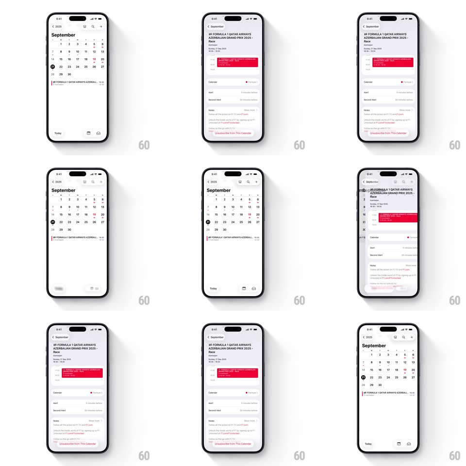

Media
Frame-by-frame

Rebuild this interaction 1:1: Apple Calendar's toolbar morph - the month view's header buttons (search, view toggle, add) fluidly morph and rearrange as you drill into an event and back, with the event detail pushing in and the toolbar re-forming for each context.

Rebuild this interaction 1:1: Apple Calendar's toolbar morph - the month view's header buttons (search, view toggle, add) fluidly morph and rearrange as you drill into an event and back, with the event detail pushing in and the toolbar re-forming for each context.
## Integration
Integration: stack-agnostic spec - springs given as stiffness/damping, timed motions as duration + curve; map every value to your framework and animation library of choice.
## Scene
Apple Calendar, September month view: "< 2025" back link, year title "September", day grid with the 21st circled, an event strip ("FORMULA 1 QATAR AIRWAYS AZERBAIJAN GRAND PRIX 2025 - Race"), and bottom toolbar (Today, view icons). Event detail: full title, red alert banner, Calendar/Alert/Second Alert rows, Notes, "Unsubscribe from This Calendar" in red.
## Motion spec
Pattern: context-driven control morph, ~350ms.
- Drill in: tapping the event pushes the detail in from the right (350ms, ease-out) while the month grid slides left and the header title crossfades "< September" (150ms).
- Morph: header buttons reshape between contexts - the search/view/add cluster collapses into a compact group (buttons slide together, 250ms, liquid-style morph where adjacent pills merge and split) and the bottom toolbar items crossfade to detail actions.
- Drill out: the reverse - month view slides back, buttons expand and re-separate into their month-view arrangement (250ms).
- Scroll: within detail, the red alert banner stays pinned while rows scroll under it.
## Calibration
- Buttons morph by merging geometry - two pills become one capsule and split apart - not by fading in new buttons.
- The month grid stays interactive after return; the 21st keeps its selection ring.
## Reduced motion
Standard push/pop transitions with 200ms crossfades on the toolbar.
## Don't miss
- The "< 2025" crumb becomes "< September" in detail - the back target relabels.
- The red alert banner and red unsubscribe link are the only accent colors; everything else is monochrome.